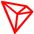

Major Blockchain Protocols¶
This page of this documentation is here just to provide you with a gist of various major protocols and help you give a rough idea around them. So you can choose the one which suits your usecase well.
HyperLedger Fabric¶
 Hyperledger Fabric is an open source enterprise-grade permissioned distributed ledger technology (DLT) platform, designed for use in enterprise contexts, that delivers some key differentiating capabilities over other popular distributed ledger or blockchain platforms. Ref.
Hyperledger Fabric is an open source enterprise-grade permissioned distributed ledger technology (DLT) platform, designed for use in enterprise contexts, that delivers some key differentiating capabilities over other popular distributed ledger or blockchain platforms. Ref.
Ethereum¶
 Ethereum is an open-source, blockchain based distributed computing platform which involves smart contract (business logic coded script) functionality. Ether is a currency used for transactions between accounts and also used to compensate participating mining nodes for computations performed. Ref.
Ethereum is an open-source, blockchain based distributed computing platform which involves smart contract (business logic coded script) functionality. Ether is a currency used for transactions between accounts and also used to compensate participating mining nodes for computations performed. Ref.
Corda¶
Corda is an open source blockchain project, designed for businesses. Only Corda allows you to build interoperable blockchain networks that transact in strict privacy. Corda’s smart contract technology allows businesses to transact directly, with value. Ref.
Avalanche¶
 Avalanche is an open, programmable smart contracts platform with low cost and Solidity compatible dApps. It is the fastest platform as measured by time-to-finality.
Avalanche is an open, programmable smart contracts platform with low cost and Solidity compatible dApps. It is the fastest platform as measured by time-to-finality.
Axia¶
 Axia is an open, programmable smart contracts platform with low cost and Solidity compatible dApps. It is the fastest platform as measured by time-to-finality.
Axia is an open, programmable smart contracts platform with low cost and Solidity compatible dApps. It is the fastest platform as measured by time-to-finality.
Binance¶
 Binance is an EVM-compatible customized blockchain protocol forked out of Geth and uses consensus of Proof of Staked Authority (PoSA).
Binance is an EVM-compatible customized blockchain protocol forked out of Geth and uses consensus of Proof of Staked Authority (PoSA).
Polygon¶
 Polygon is a protocol and a framework for building and connecting Ethereum-compatible blockchain networks.
Polygon is a protocol and a framework for building and connecting Ethereum-compatible blockchain networks.
Fantom¶
 Fantom is a fast, scalable, and secure layer-1 platform built on an aBFT consensus protocol.
Fantom is a fast, scalable, and secure layer-1 platform built on an aBFT consensus protocol.
Tron¶
 Tron is a protocol and a framework for building and connecting Tron-compatible blockchain networks.